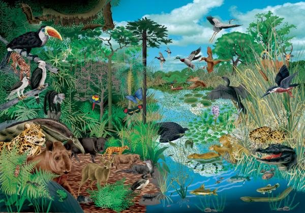
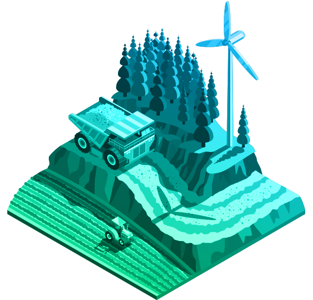

|
ENVIVALION |
|
|
ENVIVALION |
El medio ambiente es un tema importante incluso cuando la sociedad enfrenta crisis económicas, guerras y problemas sociales interminables. Importa porque la Tierra es el único hogar que tienen los humanos y proporciona aire, alimentos y otras necesidades.
Importancia del Ecosistema
Todo el sistema de soporte vital de la humanidad depende del bienestar de todas las especies que viven en la tierra. Esto se conoce comúnmente como la biosfera, un término acuñado por Vladimir Vernadsky , un científico ruso en la década de 1920. La biosfera se refiere a un sistema ecológico global en el que todos los seres vivos son interdependientes. Dentro de la biosfera o ecosistema en general, hay ecosistemas más pequeños como las selvas tropicales , los océanos, el desierto y la tundra.
|
Partes no vivas Un ecosistema está compuesto de partes vivas y no vivas, ya sea terrestre o acuática, explica el libro Valuing Ecosystem Services: Toward Better Environmental Decision-Making disponible a través de The National Academy Press . Las partes no vivas son el suelo, el agua, el aire y los nutrientes, y los elementos vivos son las plantas, los animales, los microorganismos y los seres humanos. Un ecosistema saludable tiene todos los elementos químicos y nutrientes circulando en un ciclo mientras sustenta a millones de especies. La gran cantidad de especies ayudan en el proceso de reciclar elementos cuando producen alimentos, comen, continúan con sus vidas e incluso durante su muerte. En este proceso se crean una variedad de bienes y servicios que son útiles para los humanos. |
 |
Biodiversidad
El término biodiversidad (de “diversidad biológica”) se refiere a la variedad de vida en la Tierra en todos sus niveles, desde los genes hasta los ecosistemas, y puede abarcar los procesos evolutivos, ecológicos y culturales que sustentan la vida.
Durante el último siglo, los humanos han llegado a dominar el planeta, provocando un rápido cambio en los ecosistemas y una pérdida masiva de biodiversidad en todo el planeta. Esto ha llevado a algunas personas a referirse a la época en la que vivimos ahora como el “antropoceno”. Si bien la Tierra siempre ha experimentado cambios y extinciones, hoy ocurren a un ritmo sin precedentes. Las principales amenazas directas a la biodiversidad incluyen la pérdida y fragmentación del hábitat, el uso insostenible de los recursos, las especies invasoras, la contaminación y el cambio climático global. Las causas subyacentes de la pérdida de biodiversidad, como el aumento de la población humana y el consumo excesivo, suelen ser complejas y derivan de muchos factores interrelacionados.
|
Recursos naturales y productos derivados de ellos Además de los alimentos, los ecosistemas proporcionan varios otros recursos naturales útiles para las personas. La Economía de los Ecosistemas y la Biodiversidad (TEEB) llama a estos recursos los "servicios de aprovisionamiento" de un ecosistema, ya que las personas obtienen casi todas sus necesidades materiales o aprovisionamientos de esta manera. Los más importantes son: |
 |
Agua: El agua es lo suficientemente importante como para ser declarada un derecho humano por las Naciones Unidas
Medicamentos: muchas plantas se han utilizado como medicamentos durante cientos de años e incluso ahora son explotadas por productos farmacéuticos modernos.
Ropa: la ropa se produce a partir de plantas como la pulpa de madera, el algodón, el cáñamo , el yute o productos animales como la seda , la lana y el cuero, según se enumeran en Fibras naturales ; Además, la ropa sintética se produce a partir de productos derivados del petróleo, dice Trusted Clothes.
Madera: La madera proveniente de bosques o plantaciones se utiliza como combustible o en construcción y muebles en estados TEEB.
Biocombustibles: los biocombustibles , como el bioetanol, se extraen del trigo, el maíz o cultivos de biomasa como el sauce.
Combustibles fósiles: los combustibles fósiles, como el carbón, el gas y el petróleo crudo utilizados en el transporte, la generación de energía y la producción de plásticos y productos químicos, dependen de la biomasa vegetal y animal muerta producida por ecosistemas anteriores que se almacenan y acumulan durante millones de años en la tierra, explica BBC Bitesize .
Leer más sobre:
|
Vida Más Verde |
Contaminación |
Cambio Climático |